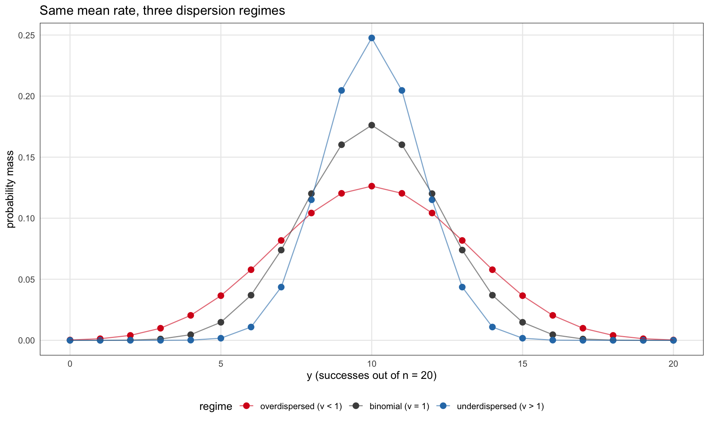
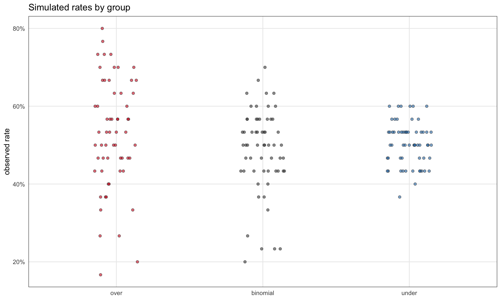
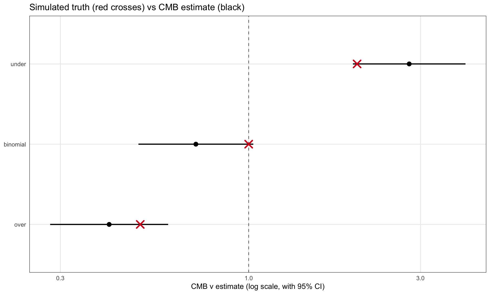
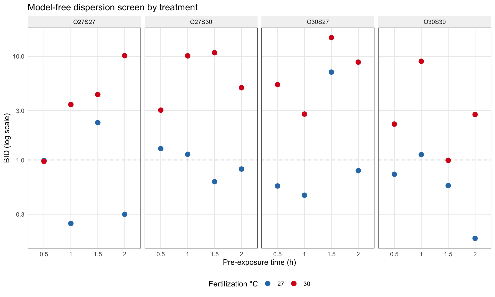

Conway–Maxwell–Binomial regression: two-directional dispersion for bounded counts
R
GLM
GLMM
Count Regression
CMB
Biometrics
Author
Julius Bogomolovas
Published
May 24, 2026
How I got here
For a long time I was fitting cell proliferation counts with Conway-Maxwell-Poisson and a log(n) offset. It worked fine. Counts behaved like rates, the dispersion parameter ν gave me a handle on whether the data were over or underdispersed relative to Poisson, and the offset turned an unbounded count distribution into something that read like a proportion model. Standard applied stats move, nothing exotic.
Then I tried to build a simulator. In the previous post I wrote a CMP-with-offset data generator so I could check coverage and power before running real experiments. And the simulator started producing counts above the biological ceiling. Cells dividing more times than there are cells. The unbounded count distribution does not know my data has an upper bound, and the offset trick does not enforce one.
In my real data this had not bitten me because proliferation rarely hits the ceiling. So the bound was a silent assumption I had been getting away with for years. The simulator surfaced it.
That sent me reading. The right answer for bounded counts with flexible dispersion is the Conway-Maxwell-Binomial distribution, the bounded analogue of CMP. It spans both dispersion directions through the same ν parameter, and it respects the bound by construction.
The puzzle is why CMB is not a standard tool. Underdispersion in proportion data is a known headache and the workarounds in common use are all unsatisfying. The oldest is the arcsine square-root transformation: apply a variance-stabilizing transform to the observed proportions and fit a Gaussian regression on the transformed values. This throws away the bounded discrete structure of the data, produces coefficients on a scale that does not map cleanly back to rates, and offers no way to model dispersion separately from the mean. The coral fertilization paper we work through later in this post takes exactly this route, and we will see why it leaves a real biological signal on the table. A second workaround is quasi-binomial, which allows the dispersion parameter to fall below 1 but does so without a proper likelihood behind it, so AIC comparisons, likelihood ratio tests, and random effects are all off the table. A third option is to fit a binomial GLM and ignore the underdispersion, accepting standard errors that are wrong in a direction that is hard to predict from the output alone. None of these is what someone would reach for if a clean alternative were sitting in their toolkit.
R support for CMB is thin. The COMMultReg package by Andrew Raim (Raim, n.d.) provides distribution-level utilities for CMB (density, sampling, normalizing constant, mean, variance) and a full regression interface for the multinomial generalization. The package name is honest about its scope: Conway-Maxwell-Multinomial Regression. The binomial case sits in the distribution module only, in the canonical (m, p, ν) parameterization (Kadane 2016), with no regression interface, no formula syntax, no dispersion submodel, and no random effects.
So that is what I built. CMB now lives on two public forks: the TMB-side family definition with the auto-differentiable likelihood, and the glmmTMB-side integration that wires it into the formula interface so you can write family = compbinomial, dispformula = ~ ... like any other family. It is not on CRAN. Maybe one day. For now if you want to follow along you install from those forks.
This post is two things. First, a short explanation of why CMB is the right tool when your data are bounded and your dispersion is heterogeneous or two-sided. Second, two worked examples: a simulated three-group dataset where you can see the machinery work in controlled conditions, and a real coral fertilization study where CMB sharpens the biological finding the original analysis could not formally test.
The dispersion landscape
A short conceptual section before code.
You have a bounded count: \(y\) successes out of \(n\) trials. The default model is binomial, which fixes the variance at \(\text{Var}(y) = np(1-p)\) once you condition on the mean. Real data are often more variable than this, sometimes less. The deviation from binomial variance, in either direction, is what people call dispersion.
The standard fix for more variance than binomial is the beta-binomial. It writes the variance as
The dispersion parameter \(\rho\) inflates the binomial variance. When \(\rho = 0\) you recover binomial. When \(\rho \to 1\) the variance approaches the maximum possible for a bounded count. So beta-binomial covers everything from binomial up to the upper bound.
What it does not cover is anything below the binomial line. The constraint \(\rho \geq 0\) is not a numerical artifact, it is a property of the family. If your data are less variable than binomial, the BB likelihood pushes \(\rho\) against zero and either pegs there (silently behaving as binomial) or fails to converge with a non-positive-definite Hessian. There is no way to wiggle through it.
The Conway-Maxwell-Binomial family does cover both sides. Its variance, approximately, behaves like \(np(1-p)/\nu\), with the dispersion parameter \(\nu\) on a multiplicative scale: \(\nu = 1\) is binomial, \(\nu < 1\) is overdispersed (more variance), \(\nu > 1\) is underdispersed (less variance). One parameter, two directions, the bound preserved.
The other natural alternative for rate-like data, CMP with a log(n) offset, fails for a different reason. It is an unbounded count distribution, so the bound is not part of the model. In situations where counts rarely approach \(n\) the offset trick can be a decent approximation, but it is not a principled choice for bounded data and it breaks at the ceiling.
A picture of what these three families look like for the same mean and different ν values:
Show code
n <-20k <-0:n# COMMultReg uses canonical (m, p, nu) parameterization. At p = 0.5 the# CMB pmf is symmetric about n/2 for any nu, so the mean equals n/2 = 10# in all three regimes without inverting the mean-p relation.p_over <-sapply(k, function(x) d_cmb(x, m = n, p =0.5, nu =0.5))p_bin <-dbinom(k, n, 0.5)p_under <-sapply(k, function(x) d_cmb(x, m = n, p =0.5, nu =2.0))df_pmf <- dplyr::bind_rows( tibble::tibble(k = k, pmf = p_over, regime ="overdispersed (ν < 1)"), tibble::tibble(k = k, pmf = p_bin, regime ="binomial (ν = 1)"), tibble::tibble(k = k, pmf = p_under, regime ="underdispersed (ν > 1)")) %>% dplyr::mutate(regime =factor(regime, levels =c("overdispersed (ν < 1)","binomial (ν = 1)","underdispersed (ν > 1)" )))ggplot(df_pmf, aes(x = k, y = pmf, color = regime)) +geom_point(size =2.5) +geom_line(aes(group = regime), alpha =0.6) +scale_color_manual(values =c("#d7191c", "grey30", "#2c7bb6")) +labs(x ="y (successes out of n = 20)",y ="probability mass",title ="Same mean rate, three dispersion regimes")

CMB pmf for n = 20 at mean rate 0.5, under three dispersion regimes. The binomial baseline (ν = 1) is shown in grey. Overdispersion (ν = 0.5) flattens the mass relative to binomial. Underdispersion (ν = 2) concentrates it around the mean. Densities computed with COMMultReg::d_cmb.
The implementation
Two things needed to happen to get CMB working as a regression family in R.
\[P(X = k \mid n, p, \nu) = \frac{1}{Z(n, p, \nu)}\binom{n}{k}^\nu p^k (1-p)^{n-k}\]
with normalizing constant \(Z(n, p, \nu) = \sum_{j=0}^{n} \binom{n}{j}^\nu p^j (1-p)^{n-j}\). This is a finite sum, which matters: unlike the CMP normalizing constant, the CMB version does not need truncation or special-function approximations.
The catch is the role of \(p\). When \(\nu = 1\) the family reduces to binomial and \(p\) equals the mean rate. When \(\nu \neq 1\), \(p\) is just a canonical parameter and the mean \(\mu = E[X]/n\) depends on both \(p\) and \(\nu\) together. There is no closed-form expression. This makes the canonical parameterization unusable for regression. If you wrote logit(p) ~ X, your coefficients would be shifts on a parameter that mixes mean and dispersion in a way the reader cannot interpret.
What the implementation does, following the pattern glmmTMB uses for negative binomial and beta-binomial and the mean parameterization Huang (Huang 2017) introduced for CMP, is the mean-parametrized version. Given a target mean \(\mu\) and a dispersion \(\nu\), solve numerically for the \(p\) that satisfies \(E[X \mid n, p, \nu] = n\mu\), then use that \(p\) inside the likelihood. The user-facing model is then:
logit(μ) = Xβ # mean rate, modeled like any binomial-family GLM
log(ν) = Zγ # dispersion, modeled separately
The Newton iteration to solve for \(p\) runs at every likelihood evaluation. This is fine because TMB handles the derivatives by automatic differentiation, so the gradient of the marginal likelihood propagates through the inner solve without any hand-coded chain rule. This is the main reason I built on TMB rather than coding the family in plain R.
Family registration on the TMB side
The compbinomial family is added to TMB’s family list with its own log-density function, then exposed to glmmTMB through its dispatch. Once registered it inherits everything: random effects, dispformula, zero-inflation if you want it, the standard fixef() / ranef() / vcov() accessors. The model code looks identical to any other glmmTMB fit:
# Install from forks (one-time)remotes::install_github("jbogomolovas2/adcomp", ref ="cmb-family",subdir ="TMB")remotes::install_github("jbogomolovas2/glmmTMB", ref ="cmb-family",subdir ="glmmTMB")# Then use it like any glmmTMB familyfit <-glmmTMB(cbind(y, n - y) ~ group + (1| id),dispformula =~ group,family = compbinomial,data = my_data)
That’s the whole interface. From the user’s side it is just another family. The work was making it behave that way.
A simulated three-group example
The cleanest way to see the families fail and succeed is to put them on data where we control the truth. We simulate three groups of observations from CMB itself, with the same trial size and the same mean rate in each group, but with three different dispersion parameters: ν = 0.5 (overdispersed), ν = 1 (binomial), ν = 2 (underdispersed). Each group has sixty observations of y out of n = 30 trials. We set the canonical parameter p = 0.5 so the CMB distribution is symmetric about n/2 for any ν, which puts the true mean at exactly 15 in all three groups without needing to invert the mean-p relation. We then fit four models on the pooled data and compare them: binomial (no dispersion submodel), beta-binomial with dispformula = ~ group, CMP-with-offset with dispformula = ~ group, and CMB with dispformula = ~ group.
The last column is the empirical analogue of 1/ν. We expect about 2.0 for the overdispersed group, 1.0 for binomial, and 0.5 for the underdispersed group. The observed ratios (2.37, 1.39, 0.37) match the expected pattern, with the binomial group running a little high by chance at this sample size.
Show code
ggplot(sim_data, aes(x = group, y = y / n, fill = group)) +geom_jitter(width =0.15, height =0, alpha =0.6, shape =21, color ="grey20") +scale_y_continuous(labels = scales::percent_format(accuracy =1)) +scale_fill_manual(values =c(over ="#d7191c", binomial ="grey30", under ="#2c7bb6")) +labs(x =NULL, y ="observed rate", title ="Simulated rates by group") +theme(legend.position ="none")

Simulated y / n by group. The overdispersed group has visibly more spread than the binomial baseline; the underdispersed group has visibly less.
Fitting the four candidates
Show code
safe_fit <-function(expr) {tryCatch(list(fit =eval.parent(substitute(expr)), error =NA_character_),error =function(e) list(fit =NULL, error =conditionMessage(e)) )}form_bound <-cbind(y, miss) ~ groupform_cmp <- y ~ group +offset(log(n))fits <-list(binomial =safe_fit(glmmTMB(form_bound, family = binomial, data = sim_data)),bb =safe_fit(glmmTMB(form_bound, family = betabinomial,dispformula =~ group, data = sim_data)),cmp =safe_fit(glmmTMB(form_cmp, family = compois,dispformula =~ group, data = sim_data)),cmb =safe_fit(glmmTMB(form_bound, family = compbinomial,dispformula =~ group, data = sim_data)))
Warning in finalizeTMB(TMBStruc, obj, fit, h, data.tmb.old): Model convergence
problem; non-positive-definite Hessian matrix. See vignette('troubleshooting')
CMB wins. CMP-offset comes in a respectable second, a little behind. Plain binomial sits at +51 AIC, which is the expected penalty for a model with no dispersion structure at all. And beta-binomial does not finish: the row shows converged = FALSE and AIC = NA. The optimizer did not trip on a numerical artifact, it ran into the rho ≥ 0 wall and could not find any set of parameter values that simultaneously fit all three groups. BB is the delicate flower here, it wilts from the slightest whiff of underdispersion dragging the whole fit along.
Show code
cmb_nu_by_group <-function(fit, groups) { grid <-data.frame(group =factor(groups, levels = groups)) X <-model.matrix(~ group, data = grid) beta <-fixef(fit)$disp V <-vcov(fit)$disp eta <-as.vector(X %*% beta) se <-sqrt(diag(X %*% V %*%t(X))) grid |> dplyr::mutate(nu_hat =exp(eta),lower =exp(eta -1.96* se),upper =exp(eta +1.96* se) )}bb_rho_by_group <-function(fit, groups) { grid <-data.frame(group =factor(groups, levels = groups)) X <-model.matrix(~ group, data = grid) beta <-fixef(fit)$disp V <-vcov(fit)$disp eta <-as.vector(X %*% beta) phi <-exp(eta) grid |> dplyr::mutate(phi = phi,rho_overdisp =1/ (1+ phi),at_boundary = phi >50 )}nu_tbl <-cmb_nu_by_group(fits$cmb$fit, c("over", "binomial", "under"))nu_tbl$nu_true <- nu_true[c("over", "binomial", "under")]rho_tbl <-bb_rho_by_group(fits$bb$fit, c("over", "binomial", "under"))knitr::kable(nu_tbl, digits =3,caption ="CMB ν estimates against simulated truth")
CMB ν estimates against simulated truth
group
nu_hat
lower
upper
nu_true
over
0.410
0.281
0.598
0.5
binomial
0.714
0.494
1.030
1.0
under
2.791
1.947
4.000
2.0
Show code
knitr::kable(rho_tbl, digits =3,caption ="Beta-binomial ρ by group, with boundary flag")
Beta-binomial ρ by group, with boundary flag
group
phi
rho_overdisp
at_boundary
over
20.982
0.045
FALSE
binomial
76.442
0.013
TRUE
under
62271613.949
0.000
TRUE
CMB recovery is decent: every 95% interval covers its simulated truth, and the point estimates land in the right neighborhood. At sixty observations per group with moderate effect sizes, that is about what we should expect.
The beta-binomial table tells two stories at once. On the overdispersed group, BB does its job: rho is 0.045 and the boundary flag is FALSE. On the binomial group, BB pushes rho down to 0.013 and trips at_boundary = TRUE, which is correct behavior. There is no overdispersion to estimate, so the family collapses toward the binomial limit, and that is what we want. The underdispersed group is where things break. Phi explodes to about 6 x 10^7 and rho goes to zero, not because BB has discovered “very little overdispersion” but because the optimizer is running off to infinity in search of a parameter value that does not exist in the family. Combined with the converged = FALSE we saw in the AIC table, this is what hitting the rho >= 0 wall looks like in practice. The two boundary hits look identical in the table and mean opposite things: one is the family doing the right thing, the other is the family unable to do anything at all.
A picture of the recovery:
Show code
ggplot(nu_tbl, aes(x = nu_hat, y = group)) +geom_vline(xintercept =1, linetype ="dashed", color ="grey45") +geom_pointrange(aes(xmin = lower, xmax = upper), linewidth =0.8) +geom_point(aes(x = nu_true), color ="#d7191c", shape =4,size =4, stroke =1.5) +scale_x_log10() +labs(x ="CMB ν estimate (log scale, with 95% CI)",y =NULL,title ="Simulated truth (red crosses) vs CMB estimate (black)")

CMB ν estimates with 95% confidence intervals, against the simulated values (red crosses). The dashed vertical line is the binomial baseline. CMB hits all three regimes.
And finally, the practical payoff: what does the confidence interval on the group mean look like under each model?
Show code
ci_widths <- dplyr::bind_rows(lapply(c("binomial", "bb", "cmb"), function(m) { f <- fits[[m]]$fitif (is.null(f)) return(NULL)as.data.frame(emmeans::emmeans(f, ~ group, type ="response")) |> dplyr::mutate(model = m, ci_width = asymp.UCL - asymp.LCL)}))ci_widths |> dplyr::select(group, model, ci_width) |> tidyr::pivot_wider(names_from = model, values_from = ci_width,names_prefix ="ci_") |> knitr::kable(digits =4,caption ="95% CI widths on the per-group mean rate")
95% CI widths on the per-group mean rate
group
ci_binomial
ci_bb
ci_cmb
over
0.0461
0.0701
0.0701
binomial
0.0461
0.0541
0.0542
under
0.0462
0.0462
0.0279
Same data, three stories. If the group is overdispersed, BB and CMB both recognize it and widen the CI. If the group is underdispersed, only CMB recognizes it; BB cannot, because its dispersion floor is rho = 0. That is the asymmetry. Beta-binomial sees half the dispersion landscape. CMB sees both halves.
The coral fertilization study
The simulated example showed CMB doing its job on data we built. The next test is real data, where there is no simulated truth, no guarantee any family fits well, and the biology might or might not be visible once the statistical work is done.
The dataset comes from Puisay et al. (Puisay et al. 2024), How thermal priming of coral gametes shapes fertilization success, with the raw spreadsheet publicly archived on Zenodo(Puisay et al. 2023). The original study asked whether pre-exposing the gametes of a broadcast-spawning coral (Acropora cytherea) to elevated temperature, before fertilization, can rescue fertilization success when fertilization itself occurs at warmer ocean temperatures.
The question
The experiment is a clean 2 × 2 × 2 × 4 factorial. Each replicate vial holds a known number of eggs (range 33 to 457, mean about 160) and a controlled batch of sperm, under these conditions:
Sperm pre-exposed at 27°C or 30°C
Oocytes pre-exposed at 27°C or 30°C
Pre-exposure lasting 0.5, 1, 1.5, or 2 hours
Fertilization itself carried out at either 27°C (control) or 30°C (warm, the climate-change scenario)
The outcome is the count of embryos that developed normally (2-cell, 4-cell, or more-cell stage) out of the total eggs scored. Six replicates per cell, 192 vials in total, and just over 30,000 eggs scored. This is a textbook bounded count: y successes out of n trials, with n known per vial.
How they analyzed it
The authors fit a binomial-style GLM, but with a twist that matters here. They applied an arcsine square-root transformation to the proportions, then ran glm() on the transformed values. This is one of the three workarounds for proportion data that section 2 listed: throw away the bounded discrete structure, get coefficients on a scale that does not map cleanly back to rates, and accept that you cannot model dispersion separately from the mean. It is what people reach for when proportion data misbehave and there is no proper bounded-count family with dispersion structure in the toolkit they are using.
The authors noticed that dispersion in their data was doing something interesting. From their discussion section:
“Interestingly, all things being equal, the fertilization success was more variable at 30°C, which may indicate opportunity for selection during the fertilization success. Furthermore, when considering the particular treatment where the thermal priming of gametes increased the fertilization success at 30°C, we observed a reduction of the variation of the fertilization success […] This experimental reduction in the variation of the fertilization success may imply that selection occurred on a pool of diverse gametes.”
This is exactly the kind of observation a CMB model is built to formalize. Warm fertilization produces more variable outcomes than control. Successful priming both raises the mean and reduces the variability. Their analysis let them comment on this qualitatively in the discussion but did not let them attach a number to it, give it a confidence interval, or test it formally against the mean structure. They could see the dispersion pattern but could not model it.
How we analyze it
Same mean structure as theirs (a three-way interaction of fertilization temperature, pre-exposure time, and the cross of sperm × oocyte priming), but with three changes. First, we go back to the proper binomial scale via cbind(y, n - y), no transformation. Second, we use family = compbinomial and let dispformula = ~ fert_temp * treatment model the dispersion across the eight (fert_temp × treatment) cells. Third, we add (1 | site) to capture shared variation across the two fertilization-temperature samples drawn from the same pre-exposure batch. We then compare the same set of candidate families introduced in the simulated example.
Before fitting anything, we check whether the data really do have heterogeneous dispersion across treatments. For each of the 32 treatment cells (2 fertilization temps × 4 priming treatments × 4 pre-exposure times, 6 replicates each), we compute a model-free binomial-index-of-dispersion: the Pearson chi-square against a binomial null with the cell’s own mean rate, divided by degrees of freedom. Values above 1 indicate overdispersion, below 1 indicate underdispersion.
At control fertilization (27°C), the median BID is below 1 and 70% of cells sit on the underdispersed side, some quite strongly (minimum BID around 0.18). At warm fertilization (30°C), the median jumps to about 4.6, with the most extreme cells running up around 15. The data have heterogeneous, two-directional dispersion structure, exactly the regime CMB is designed for and exactly the regime BB cannot represent.
A picture of all 32 cells:
Show code
ggplot(bid_screen,aes(x =factor(time), y = BID, color = fert_temp)) +geom_hline(yintercept =1, linetype ="dashed", color ="grey45") +geom_point(size =3) +facet_wrap(~ treatment, nrow =1) +scale_y_log10() +scale_color_manual(values =c("27"="#2c7bb6", "30"="#d7191c"),name ="Fertilization °C") +labs(x ="Pre-exposure time (h)",y ="BID (log scale)",title ="Model-free dispersion screen by treatment")

Model-free dispersion screen by treatment. Cells above the dashed line are overdispersed, below are underdispersed. Warm fertilization (red) sits almost entirely above; control (blue) sits mostly below.
Fitting six candidates
Six families this time. The four from the simulated section, plus the two constant-dispersion variants (beta-binomial and CMB with dispformula = ~ 1) to confirm that the by-treatment dispersion submodel earns its degrees of freedom on real data. Random intercept on site captures shared variation across the two fertilization-temperature samples drawn from each pre-exposure batch.
Show code
safe_fit <-function(expr) {tryCatch(list(fit =eval.parent(substitute(expr)), error =NA_character_),error =function(e) list(fit =NULL, error =conditionMessage(e)) )}form_bound <-cbind(y, miss) ~ fert_temp * time * treatment + (1| site)form_cmp <- y ~ fert_temp * time * treatment +offset(log(n)) + (1| site)fits <-list(binomial =safe_fit(glmmTMB(form_bound, family = binomial, data = mod_data)),bb_constant =safe_fit(glmmTMB(form_bound, family = betabinomial,dispformula =~1, data = mod_data)),bb_by_treat =safe_fit(glmmTMB(form_bound, family = betabinomial,dispformula =~ fert_temp * treatment, data = mod_data)),cmp_offset =safe_fit(glmmTMB(form_cmp, family = compois,dispformula =~ fert_temp * treatment, data = mod_data)),cmb_constant =safe_fit(glmmTMB(form_bound, family = compbinomial,dispformula =~1, data = mod_data)),cmb_by_treat =safe_fit(glmmTMB(form_bound, family = compbinomial,dispformula =~ fert_temp * treatment, data = mod_data)))
Warning in finalizeTMB(TMBStruc, obj, fit, h, data.tmb.old): Model convergence
problem; non-positive-definite Hessian matrix. See vignette('troubleshooting')
Warning in finalizeTMB(TMBStruc, obj, fit, h, data.tmb.old): Model convergence
problem; false convergence (8). See vignette('troubleshooting'),
help('diagnose')
Binomial sits at +286 AIC, which is the price of ignoring the dispersion structure entirely. Among the families that try to model dispersion, CMB-by-treatment wins by 19 AIC over CMP-offset and by 48 over the constant-dispersion variants. CMP-offset finishes second, which is honest: at the rates and trial sizes here (rates 0.46 to 0.97, trial sizes 33 to 457), the upper bound is not strongly binding for most cells, so the unbounded-count approximation is not catastrophic. It still loses to CMB by a clear margin. Beta-binomial with by-treatment dispersion did not converge, as the simulated example predicted.
What CMB found about dispersion
Show code
disp_grid <-expand.grid(fert_temp =factor(c(27, 30), levels =c(27, 30)),treatment =factor(c("O27S27", "O27S30", "O30S27", "O30S30"),levels =c("O27S27", "O27S30", "O30S27", "O30S30")))cmb_nu_by_cell <-function(fit, grid) { X <-model.matrix(~ fert_temp * treatment, data = grid) beta <-fixef(fit)$disp V <-vcov(fit)$disp eta <-as.vector(X %*% beta) se <-sqrt(diag(X %*% V %*%t(X))) grid |> dplyr::mutate(nu_hat =exp(eta),lower =exp(eta -1.96* se),upper =exp(eta +1.96* se) )}knitr::kable(cmb_nu_by_cell(fits$cmb_by_treat$fit, disp_grid),digits =3,caption ="CMB ν by treatment cell")
CMB ν by treatment cell
fert_temp
treatment
nu_hat
lower
upper
27
O27S27
0.921
0.508
1.671
30
O27S27
0.143
0.076
0.271
27
O27S30
0.947
0.527
1.700
30
O27S30
0.129
0.069
0.241
27
O30S27
0.359
0.190
0.676
30
O30S27
0.136
0.074
0.249
27
O30S30
1.663
0.936
2.955
30
O30S30
0.303
0.168
0.548
CMB sees a clean two-temperature story. Every warm-fertilization cell is strongly overdispersed, with ν between 0.13 and 0.30 and CIs nowhere near 1. The control cells are quieter: two are statistically binomial, one (O30S27) is clearly overdispersed, and one (O30S30, the double-primed condition) has a point estimate of ν ≈ 1.66 with a CI that just brushes 1. That last cell is exactly the underdispersion the paper noticed in the discussion. CMB does not formally call it significant at the 95% level, but it sees the direction the authors described, and it puts numbers on it.
CMB ν by treatment, with 95% confidence intervals. All warm-fertilization cells (red) are clearly overdispersed. Control-fertilization cells (blue) straddle binomial, with O30S30 hinting at underdispersion.
Confidence intervals on what we actually care about
The dispersion table is the methodological finding. The biological question is “by how much does each priming strategy raise fertilization success at warm temperature, and how confident are we in that number?” That is the marginal-mean question, and the answer depends on the dispersion model.
Show code
em_tables <-list()for (m inc("binomial", "cmb_by_treat")) { f <- fits[[m]]$fitif (is.null(f)) next em <-emmeans(f, ~ fert_temp * treatment,at =list(time =1.25),type ="response") em_tables[[m]] <-as.data.frame(em) |> dplyr::mutate(model = m, ci_width = asymp.UCL - asymp.LCL)}
NOTE: Results may be misleading due to involvement in interactions
NOTE: Results may be misleading due to involvement in interactions
Show code
dplyr::bind_rows(em_tables) |> dplyr::select(model, fert_temp, treatment, ci_width) |> tidyr::pivot_wider(names_from = model, values_from = ci_width,names_prefix ="ci_") |> knitr::kable(digits =4,caption ="95% CI widths on the marginal predicted rate per cell")
95% CI widths on the marginal predicted rate per cell
fert_temp
treatment
ci_binomial
ci_cmb_by_treat
27
O27S27
0.0224
0.0168
30
O27S27
0.0485
0.0690
27
O27S30
0.0220
0.0162
30
O27S30
0.0594
0.0887
27
O30S27
0.0313
0.0352
30
O30S27
0.0531
0.0689
27
O30S30
0.0296
0.0163
30
O30S30
0.0410
0.0409
The CMB CIs adjust the binomial baseline up where the data are overdispersed and down where they are not. Warm-fertilization cells widen by 30 to 50 percent relative to binomial, with one exception: O30S30 at warm has the mildest overdispersion of the four warm cells (ν ≈ 0.30, closest to binomial) and ends up at essentially the binomial width. Control cells either widen slightly (O30S27, the one clearly overdispersed control cell) or tighten below binomial. The O30S30 cell at control is the cleanest example: binomial 0.030, CMB 0.016, almost half.
That asymmetric correction is the practical payoff. Dispersion is not just a parameter we estimate, it shifts how confident we are in every cell-level rate, in the right direction for each cell.
Sharpening the biological finding
With dispersion correctly modeled, we can ask the question the original paper asked, but with calibrated standard errors. At warm fertilization (30°C), which priming strategy works?
NOTE: Results may be misleading due to involvement in interactions
Show code
pairs(em_30, adjust ="tukey")
contrast estimate SE df z.ratio p.value
O27S27 - O27S30 0.3861 0.152 Inf 2.541 0.0538
O27S27 - O30S27 0.3062 0.137 Inf 2.235 0.1139
O27S27 - O30S30 -0.2651 0.127 Inf -2.087 0.1573
O27S30 - O30S27 -0.0799 0.142 Inf -0.563 0.9430
O27S30 - O30S30 -0.6513 0.132 Inf -4.922 <.0001
O30S27 - O30S30 -0.5714 0.115 Inf -4.974 <.0001
Results are given on the log odds ratio (not the response) scale.
P value adjustment: tukey method for comparing a family of 4 estimates
Three things sit in that table. First, double-priming (O30S30) significantly outperforms each single-priming strategy, both contrasts at p < 0.0001 with effect sizes near 0.6 on the log-odds scale. Second, double-priming does not significantly beat no priming (p = 0.16). Third, single-priming does not improve on no priming either; the O27S27 vs O27S30 contrast is even marginally significant in the wrong direction (p = 0.054), meaning no priming was slightly better than priming sperm alone.
This sharpens the paper’s conclusion. The original analysis said priming helps and double-priming helps most. The CMB-calibrated version says something more pointed: you have to prime both gametes. Single-priming does not significantly outperform no priming, and may even be marginally worse. The only thing that lets us make that claim cleanly is calibrated uncertainty on each contrast, which required the right dispersion model.
The variability hint in the paper’s discussion now has both halves: priming both gametes restored the mean and the consistency of fertilization, and we can put numbers on each.
When to use what
CMB is not the answer to every proportion-regression problem.
If your data are clearly overdispersed and the dispersion looks roughly constant across groups, use beta-binomial. It is faster, well-supported, and what your reviewers will expect.
If your counts are nominally bounded but rarely come near the bound, and the dispersion goes in only one direction, CMP with an offset is a defensible workaround. This is the situation I originally had, and it works fine until you ask it to simulate.
If your counts can hit the bound, the dispersion is heterogeneous across groups, or you suspect any sub-binomial variance in any subgroup, CMB is the right tool. The standard alternatives fail in this regime in ways that are hard to detect unless you specifically look for them.
A few warning signs:
Your binomial residuals show clear structure (cells systematically over or under predicted relative to binomial expectation).
Variance ratios (observed variance over binomial expectation) differ across subgroups, or cross 1.
A Pearson chi-square comes in well below the residual degrees of freedom.
A beta-binomial with per-group dispersion fails to converge, or pegs rho near zero in some groups but clearly above zero in others.
Any one of these is a hint that the family you are using cannot describe what the data are doing.
Bottom line
For bounded count data, the binomial baseline is correct only when the data are well-behaved. Real data often are not. The standard upgrade path is beta-binomial, but BB can only ever inflate variance above binomial. When the data want sub-binomial variance, BB hits its rho >= 0 wall, sometimes silently, sometimes by refusing to converge.
CMB fixes this. It is the binomial analogue of CMP, it covers both dispersion directions through a single ν parameter, and it respects the upper bound by construction. With the implementation linked below it slots into the standard glmmTMB workflow.
The coral example showed what this buys you on a real study: a sharper biological claim than the original analysis could make, with properly calibrated intervals on each contrast. The dispersion structure the authors had only described qualitatively is now an estimable, testable feature of the fit.
Getting CMB in your R session
The CMB family is not on CRAN. For now it lives on two public forks:
Install both with the snippet above, write family = compbinomial in your glmmTMB() call, and the rest is the standard workflow you already know. Issues and pull requests are welcome on either fork. If compbinomial ends up useful for your work I would be glad to hear about it.
Acknowledgements
This post stands on a lot of other people’s code. The CMB distribution work by (Kadane 2016) and the COMMultReg package by Andrew Raim (Raim, n.d.) provided the distribution-level reference implementation that I checked the TMB-side density against. The mean parameterization follows the pattern Huang (Huang 2017) introduced for CMP. TMB (Kristensen et al. 2016) handled the automatic differentiation that made the inner Newton solve tractable, and glmmTMB (Brooks et al. 2017) provided the family-dispatch and dispformula machinery that the CMB family slots into. The coral data is from Puisay et al. (Puisay et al. 2024), archived openly on Zenodo (Puisay et al. 2023), which is what made the real-data demonstration possible. R package citations were generated with grateful(Rodrı́guez-Sánchez, n.d.).
References
Brooks, Mollie E., Kasper Kristensen, Koen J. van Benthem, Arni Magnusson, Casper W. Berg, Anders Nielsen, Hans J. Skaug, Martin Mächler, and Benjamin M. Bolker. 2017. “glmmTMB Balances Speed and Flexibility Among Packages for Zero-Inflated Generalized Linear Mixed Models.”The R Journal 9 (2): 378–400. https://doi.org/10.32614/RJ-2017-066.
Kadane, Joseph B. 2016. “Sums of Possibly Associated Bernoulli Variables: The Conway-Maxwell-binomial Distribution.”Bayesian Analysis 11 (2): 403–20. https://doi.org/10.1214/15-BA955.
Kristensen, Kasper, Anders Nielsen, Casper W. Berg, Hans Skaug, and Bradley M. Bell. 2016. “TMB: Automatic Differentiation and Laplace Approximation.”Journal of Statistical Software 70 (5): 1–21. https://doi.org/10.18637/jss.v070.i05.
Puisay, Antoine, Laetitia Hédouin, Rosanne Pilon, Claire Goiran, and Benoit Pujol. 2023. “Data for: How Thermal Priming of Coral Gametes Shapes Fertilization Success.” Zenodo. https://doi.org/10.5281/zenodo.8032394.
———. 2024. “How Thermal Priming of Coral Gametes Shapes Fertilization Success.”Journal of Experimental Marine Biology and Ecology. https://doi.org/10.1016/j.jembe.2023.151953.